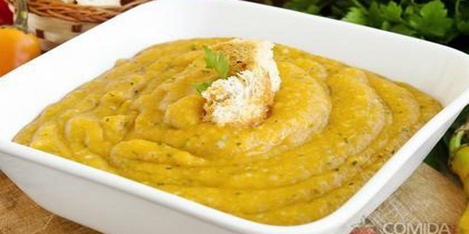

Angu

INGREDIENTES
- 2 litros de água fervendo
- 500g de fubá
PORÇÕES
Serve 15 pessoas
TEMPO DE PREPARO
40 minutos
PASSO A PASSO
- Dissolva o fubá num pouco de água fria, mexendo com colher de pau
- Junte a água fervendo e, mexendo sem parar, em fogo alto.
- Quando a massa começar a grudar no fundo da panela, reduzir a chama e continuar a mexer até soltar do fundo da panela.
- Molhe uma forma e coloque o angu.
- Deixar esfriar um pouco e virá-lo numa travessa.